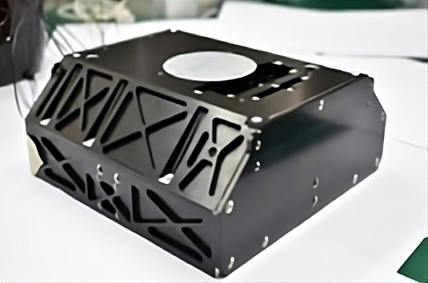
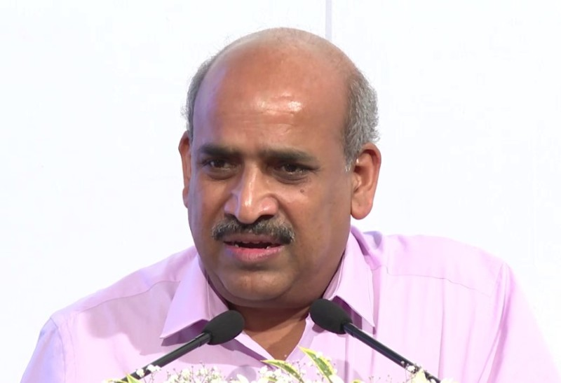

Chandrayaan-3 is the third installment in India's lunar exploration program, marked a historic
achievement with its successful launch on July 14, 2023. Developed by the Indian Space Research
Organisation (ISRO), the mission included a lunar lander named Vikram and a rover named Pragyan, making
India the fourth country to achieve a successful Moon landing, specifically on the lunar south
pole
The mission was fuelled and powered by the LVM3-M4 or FatBoy , India's largest liquid fuel cryogenic
engine.The LVM3 M4, also known as GSLV Mk III, played a crucial role in launching Chandrayaan-3 into its
lunar trajectory. This powerful and versatile rocket, developed by ISRO, features a robust cryogenic
upper stage (C25) that propelled the spacecraft beyond Earth's orbit. The precision of the LVM3 M4
ensured the successful deployment of Chandrayaan-3, showcasing India's prowess in developing advanced
launch vehicles for ambitious space exploration missions.
Chandrayaan 3
India's mission to moon

India's Fatboy

Height : 43.5m
Number of Stages : 3
Vehicle Diameter : 4m
Payload Capacity : 4 tonnes
Lift Off Mass : 640 tonnes
Largest Cryogenic Engine
Why moon ?
India's Chandrayaan-3 mission has not just landed on the Moon but has boldly stepped into uncharted
territory – the southern pole. This strategic move makes India the first nation to explore this
mysterious region, unlocking a treasure trove of lunar secrets. The primary focus of this historic
mission lies in solving the long-standing mystery of water on the Moon.
With the help of special scientific tools India aims to decipher the presence and distribution of water-ice in the Moon's permanently shadowed areas.India aims to decipher the presence and distribution of water-ice in the Moon's permanently shadowed areas.
The lunar landscape, with its unique geological features, holds clues to the Moon's formation and evolution. Chandrayaan-3 is equipped to unravel the secrets buried beneath the lunar surface, providing insights into the chemical and elemental composition of the soil. By investigating seismic activities around the landing site, scientists aim to delineate the structure of the lunar crust and mantle, contributing to our understanding of celestial bodies' geological processes. These revelations are crucial for future lunar missions, space habitats, and potential resource utilization.
With the help of special scientific tools India aims to decipher the presence and distribution of water-ice in the Moon's permanently shadowed areas.India aims to decipher the presence and distribution of water-ice in the Moon's permanently shadowed areas.
The lunar landscape, with its unique geological features, holds clues to the Moon's formation and evolution. Chandrayaan-3 is equipped to unravel the secrets buried beneath the lunar surface, providing insights into the chemical and elemental composition of the soil. By investigating seismic activities around the landing site, scientists aim to delineate the structure of the lunar crust and mantle, contributing to our understanding of celestial bodies' geological processes. These revelations are crucial for future lunar missions, space habitats, and potential resource utilization.

Planning the mission
In meticulously planning the Chandrayaan-3 mission, the Indian Space Research Organisation (ISRO)
showcased its strategic prowess, technological finesse, and collaborative spirit. The key figures
responsible for orchestrating the mission, emphasizing their expertise and roles. ISRO Chairman S
Somanath's leadership in designing the Bahuballi rocket, Director Unnikrishnan Nair S spearheading
rocketry research, and Project Director Veeramuthuvel P's dedication to Chandrayaan-3 are highlighted.
The collaborative effort involving nearly 1,000 engineers and scientists, despite challenges posed by
the Covid-19 pandemic, underscores the depth of commitment and expertise embedded in the mission's
planning.


A focal point in the planning process was the incorporation of lessons learned from the Chandrayaan-2
mission, particularly addressing the unexpected variations in the Lander module's performance. This
emphasis on continuous improvement showcased ISRO's commitment to overcoming setbacks and enhancing the
robustness of its lunar exploration programs. The planning phase also underscored the collaborative
nature of the endeavor, with contributions from various ISRO centers and external partners in areas such
as satellite design, thermal engineering, communication subsystems, and more.

Challenges Ahead
"Chandrayaan-3 is all about doing more with less. When a country has limited
capabilities but dreams big, it has to be smart to use the love and gravity of Mother Earth to go
all the way to the moon.” said S. Somanath, ISRO chairman
LVM-3 may be a bahubali, but it still lacked the punch to send the 3,921kg Chandrayaan-3 satellite on a direct flight to the moon. ISRO engineers devised a way to overcome this big problem―use the earth’s gravity to slingshot Chandrayaan-3 to the moon. Using the spacecraft’s propulsion module, the scientists gradually kept raising its orbit and velocity. On August 1, Chandrayaan-3 attained enough ‘escape velocity’ to leave Mother Earth’s loving hold and go on its solitary journey of 3.84 lakh kilometres to the moon.
“This was a very, very tricky operation requiring great precision, since the approach velocity had to be just right,” said S. Somanath, ISRO chairman. If it were too fast, the satellite would have bounced off and become a flyby mission. If it were too slow, it could have been pulled in and crash-landed on the lunar surface.
LVM-3 may be a bahubali, but it still lacked the punch to send the 3,921kg Chandrayaan-3 satellite on a direct flight to the moon. ISRO engineers devised a way to overcome this big problem―use the earth’s gravity to slingshot Chandrayaan-3 to the moon. Using the spacecraft’s propulsion module, the scientists gradually kept raising its orbit and velocity. On August 1, Chandrayaan-3 attained enough ‘escape velocity’ to leave Mother Earth’s loving hold and go on its solitary journey of 3.84 lakh kilometres to the moon.
“This was a very, very tricky operation requiring great precision, since the approach velocity had to be just right,” said S. Somanath, ISRO chairman. If it were too fast, the satellite would have bounced off and become a flyby mission. If it were too slow, it could have been pulled in and crash-landed on the lunar surface.

Nilesh Desai, Director of ISRO's Space Applications Centre, said the rover's movement was impacted by
visibility issues, boulders, and craters on the lunar surface. The South Pole of the Moon has an uneven
surface and very deep craters, that are making it difficult for the rover to move freely and smoothly.
The other day, the rover faced its first obstacle when it located a 4-meter diameter crater positioned
three meters ahead of its location. The ISRO redirected the rover to a safer path. Chandrayaan-3 Pragyan
rover's speed was slowed down due to the nature of the surface of the Moon's South Pole

Mission Sequence
Chandrayaan-3 embarked on its celestial journey, propelled by the mighty LVM3-M4 rocket, soaring into
the cosmos on 14 July 2023, at 09:05 UTC. The launch spectacle unfolded at the Satish Dhawan Space
Centre Second Launch Pad in Sriharikota, Andhra Pradesh, India.
The mission commenced with Chandrayaan-3 gracefully entering an Earth parking orbit, characterized by a
perigee of 170 km (106 mi) and an apogee of 36,500 km (22,680 mi).
Lift Off
0.00s
S200 Ignition
Burning Phase
127.00s
S200 Solid fuel burning
Payload Fairing Separation
194.96s
PLF Separation
Engine Separation
305.56s
S200 Solid fuel burning
Chandrayaan-3 Separation
969.42s
Lander Module Separated
Into the Orbit !!!

The Chandrayaan-3, consisting of a propulsion module, a lander and a
rover, orbited the Earth in an elliptical orbit. Using the fuel in
the propulsion module, the spacecraft's orbit was raised in 5 stages
(July 5, 17, 18, 20 and 25). At its closest point (perigee), the orbit
was 170 km away from the Earth and and 36,500 km at its farthest point
(apogee).
The spacecraft moved into lunar orbit on August 1.
It entered the Moon's gravitational field on August 5.
There, starting with an ellipse, the diameter was reduced
and the orbit lowered in four stages (August 6, 9, 14 and 16).
The spacecraft switched over to a circular orbit when it
reached 100 km above the lunar surface.
15 Minutes of Terror
I reached my destination and you too!':
Chandrayaan-3
S. Somanath, the chairman of ISRO, described this process as “15 minutes of terror” for them. It includes four phases:
1. The Rough Braking phase includes reducing the lander’s horizontal velocity from a range of 1.68 km/sec (more than 6,000 km/h) at a height of 30 km from the lunar surface, to almost zero for a soft landing at the designated site. This has to be done with precision, within certain durations.
2. At a height of 7.42 km from the surface, the lander is to go into an “attitude hold phase” lasting around 10 seconds, during which it should tilt from a horizontal to a vertical position while covering a distance of 3.48 km.
3. The “fine braking phase” lasts around 175 seconds, during which the lander is to move fully into a vertical position. It is to traverse the final 28.52 km to the landing site, the altitude will come down to 800-1,000 m, and it would reach a nominal speed of 0 m/sec.
4. “Terminal descent” is the final stage, when the spacecraft is supposed to descend totally vertically onto the surface.
S. Somanath, the chairman of ISRO, described this process as “15 minutes of terror” for them. It includes four phases:
1. The Rough Braking phase includes reducing the lander’s horizontal velocity from a range of 1.68 km/sec (more than 6,000 km/h) at a height of 30 km from the lunar surface, to almost zero for a soft landing at the designated site. This has to be done with precision, within certain durations.
2. At a height of 7.42 km from the surface, the lander is to go into an “attitude hold phase” lasting around 10 seconds, during which it should tilt from a horizontal to a vertical position while covering a distance of 3.48 km.
3. The “fine braking phase” lasts around 175 seconds, during which the lander is to move fully into a vertical position. It is to traverse the final 28.52 km to the landing site, the altitude will come down to 800-1,000 m, and it would reach a nominal speed of 0 m/sec.
4. “Terminal descent” is the final stage, when the spacecraft is supposed to descend totally vertically onto the surface.


Pragyan's Turn
As the lander gently landed on the moon, dust settled, and the six-wheeled rover, named Pragyan, rolled
down ramps for testing.
The rover, Pragyan, designed for the Chandrayaan-3 mission, boasts a mission life of one lunar day,
equivalent to 14 Earth days. Weighing in at 26 kg, this compact explorer operates with a power of 50 W,
ensuring its agility and efficiency on the lunar surface. With dimensions measuring 917 x 750 x 397
mm³.It is moving with an average speed of 1cm/sec. Pragyan is equipped with two payloads for scientific
exploration. Communication is established through the lander, facilitating the transmission of valuable
data back to Earth. This small yet robust rover plays a crucial role in advancing our understanding of
the lunar landscape .

Scientific Explorations
The lander payloads include Chandra's Surface Thermophysical Experiment (ChaSTE), Instrument for Lunar
Seismic Activity (ILSA), Laser Retroreflector Array (LRA) Rover, and Radio Anatomy of Moon Bound
Hypersensitive ionosphere and Atmosphere (RAMBHA).
The rover has two payloads - the Alpha Particle X-ray Spectrometer (APXS), and the Laser Induced Breakdown Spectroscope (LIBS). APXS will study the elemental composition of the lunar soil and rocks around the landing site. These elements include aluminum, potassium, magnesium, silicon, titanium, iron, and calcium.
The rover has two payloads - the Alpha Particle X-ray Spectrometer (APXS), and the Laser Induced Breakdown Spectroscope (LIBS). APXS will study the elemental composition of the lunar soil and rocks around the landing site. These elements include aluminum, potassium, magnesium, silicon, titanium, iron, and calcium.
ChaSTE : Chandra’s Surface Thermophysical Experiment
To carry out the measurements of thermal properties of lunar surface near polar region.
RAMBHA-LP : Langmuir Probe
To measure the near surface plasma (ions and electrons) density and its changes with time.

ILSA : Instrument for Lunar Seismic Activity
To measure seismicity around the landing site and delineating the structure of the lunar crust and
mantle.
APXS : Alpha Particle X-Ray Spectrometer
To derive the chemical
composition and infer
mineralogical composition
to further enhance our
understanding of lunar
surface.
LIBS :
Laser Induced
Breakdown
Spectroscope
To determine the elemental
composition (Mg, Al, Si, K,
Ca,Ti, Fe) of lunar soil and
rocks around the lunar
landing site.
SHAPE :
Spectro-polarimetry of
Habitable Planet Earth
An experimental payload to study
the spectro-polarimetric signatures
of the habitable planet Earth in
the near-infrared (NIR) wavelength
range (1-1.7 μm).
Rest Becomes History
Dance, Sweets and Smiles : after a 40-day trip from the space center in Sriharikota, our Chandrayaan-3
made it to the moon on August 23. The Vikram lander gently landed at 6:04 PM IST
Everybody, not just the space scientists but also regular people, schools, the army, and even
politicians, were super excited. Schools all over the country celebrated. Kids and teachers were happy
about what we achieved in space.
Politicians from different parties joined in to say congratulations to ISRO.
As Chandrayaan 3 accomplishes a secure lunar landing, social media buzzes with pride and well-wishes. The Chandrayaan-3 itself takes center stage in these reactions. It sent its first message, congratulating India on reaching its destination.
Chandrayaan-3 Mission: 'India, I reached my destination and you too!':Chandrayaan-3
The smiles and excitement in the eyes of the people is enough to warm the heart and capture the essence of a moment filled with joy and pride.
As Chandrayaan 3 accomplishes a secure lunar landing, social media buzzes with pride and well-wishes. The Chandrayaan-3 itself takes center stage in these reactions. It sent its first message, congratulating India on reaching its destination.
Chandrayaan-3 Mission: 'India, I reached my destination and you too!':Chandrayaan-3
The smiles and excitement in the eyes of the people is enough to warm the heart and capture the essence of a moment filled with joy and pride.
A Strong Reply to Haters
Back in 2014, ISRO successfully became the fourth organisation in the world to insert its orbiter
‘Mangalyaan’ into the Martian orbit in the first attempt. The mission garnered massive glory for the
country. But the feat was acknowledged in a rather racial way by the New York Times. The outlet issued a
cartoon on the mission’s success, which offended many Indians.
ISRO on August 23, successfully soft-landed Chandrayaan-3’s Vikram Lander Module on the South Pole of
the Moon and became the first and the only nation to do so.
The Indian folks take a dig at the US based New York Times by sharing new cartoons depiciting the
success of ISRO, finally New York Times issued an official apology and claimed that there were no
intentions to purposefully target any country or individual.
The Moon Stars
The success of our Chandrayaan is completely attributed to the hardworking smart brains behind the
project. ISRO chief S Somanath said a team of more than 1000 intelligent brains of scientists and
engineers work tirelessly for four years , to bring the dream into reality. This energy and excitement
even did not diminish a little during the rough phase of covid-19.
Though there are thousands of intelligent names, however some of those smart people are worth knowing..
Dr S Somanath, ISRO Chief
ISRO chief Dr. S. Somanath did his B. Tech in Mechanical Engineering from TKM College of
Engineering, Kollam and Masters in Aerospace Engineering from Indian Institute of Science, Bangalore
with specialisation in Structures, Dynamics and Control. He joined GSLV MkIII Project during 2003
and was the Deputy Project Director responsible for overall design and integration of India’s
heaviest and most powerful rocket. He was the Project Director of GSLV Mk-III (now LVM-3) from June
2010 to 2014. Prior to becoming ISRO Chairman, Somanath headed VSSC as its Director
P Veeramuthuvel, project director
Hailing from Tamil Nadu’s Villupuram district, Veeramuthuvel completed his Diploma in Mechanical
Engineering and went on to get a Degree in Engineering. Later he did his PhD at IIT-Madras. He
joined ISRO in 2014. (Image: Screengrab from ISRO livestream)
Mohana Kumar , mission director
Mohana Kumar, the mission director of Chandrayaan-3 has worked as the director for the successful
commercial launch of the One Web India 2 satellites on board the LVM3-M3 mission.
S Unnikrishnan Nair, VSSC director
Dr. S. Unnikrishnan Nair, Director, Vikram Sarabhai Space Centre, was involved in the development of
various aerospace systems and mechanisms for Indian rockets - PSLV, GSLV and LVM3. As founding
Director of the ISRO's Human Space Flight Centre (HSFC) Unnikrishnan has led the team for Gaganyaan
Project and established the Astronaut Training Centre at Bangalore in HSFC at Bangalore.

M Sankaran, URSC director
M. Sankaran took over as Director of U R Rao Satellite Centre (URSC), the lead Centre in the country
for design, development and realisation of all satellites of ISRO, on June 1, 2021. He is currently
leading satellite fraternity to realise various types of satellites to meet the national
requirements in the areas like communication, navigation, remote sensing, meteorology and
inter-planetary exploration.
A Rajarajan, LAB chief
A Rajarajan the Satish Dhawan Space Centre (SDSC) that provides the solid fuel for the rocket and
also the country’s rocket port in Sriharikota in Andhra Pradesh. The Launch Authorisation Board
(LAB) gives the go-ahead for the launch.
Thank You...
But Wait !
there is more for you...
Do you like this page ? or if you have a nice idea and want to collaborate with me then contact me
through whichever way suits you, cause I believe success tastes better when its shared.


Do check out my personal website if you want to
know more about my skills or projects.
Test your knowledge about Chandrayaan 3 by taking a small quiz prepared by me, and challenge your friends by sharing your score with them.
Or check out some amazing unknown facts about the mission and share the knowledge with others.
Or if you find any bugs in the website do let me know and submit a PR at the repositry and I'll make sure to take action.
And don't forget to check out this page where I have listed all the resources and editing tools that were used to create this project, you can use these free tools in your next project. Thank me later 😀 .
Test your knowledge about Chandrayaan 3 by taking a small quiz prepared by me, and challenge your friends by sharing your score with them.
Or check out some amazing unknown facts about the mission and share the knowledge with others.
Or if you find any bugs in the website do let me know and submit a PR at the repositry and I'll make sure to take action.
And don't forget to check out this page where I have listed all the resources and editing tools that were used to create this project, you can use these free tools in your next project. Thank me later 😀 .
Special Thanks to
ACM-JEC for providing us this opportunity to showcase our web skills.